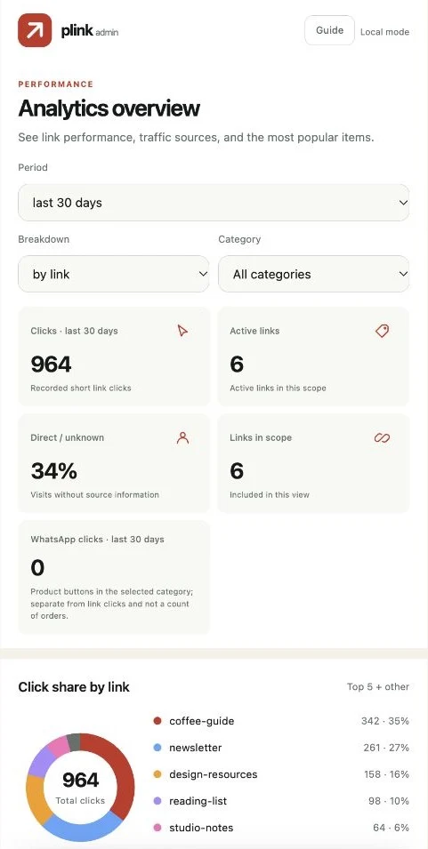

Links that stay yours
Create clean slugs, manage destinations, and group channel-specific links under one catalog item.
Short links, a bio-link page, and a place to publish your writing—all running on your own server.

Analytics overview · illustrative sample data
Create clean slugs, manage destinations, and group channel-specific links under one catalog item.
Write in the visual editor or Markdown, save drafts, and publish articles on your own site.
Review redirect clicks and compare links by provider, channel, or campaign from the dashboard.
Use Plink as a shortener, a bio-link page, or a fuller public catalog. Switch public features on as you need them.
Source code is available under AGPL-3.0. See the repository for configuration, security notes, and the complete guide.
Read the setup guide ↗Quick start · Go 1.26.6+
git clone https://github.com/srmdn/plink
cd plink
cp .env.example .env
# Set ADMIN_PASSWORD in .env
go run ./cmdThen open localhost:8080/admin/login with the default settings.